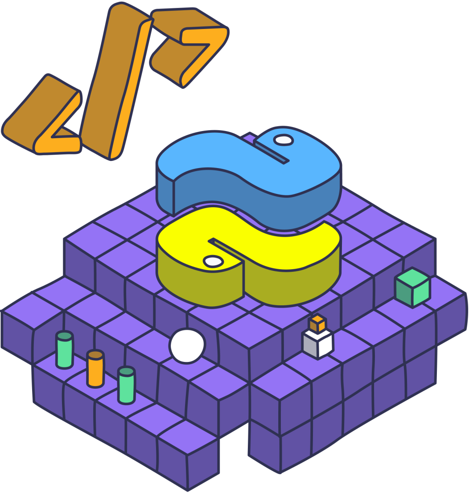

git rm --cachedGit за замовчуванням хоче відстежувати усе. А треба — не все.
venv/, __pycache__/, .idea/ — це не код, це стан твоєї машини*.pyc, білди, логи — їх завжди можна створити заново.env з паролями, токенами, ключами API.env з ключем AWS. Бот знайшов його на GitHub за 4 хвилини й підняв ферму для майнінгу.
.idea/ — колега робить pull і йому ламає налаштування IDE. Далі — конфлікт у файлі, який взагалі не код.
| Патерн | Що означає | Приклад: що потрапить під правило |
|---|---|---|
*.log | * — будь-яка кількість символів | app.log, logs/debug.log — усі .log на будь-якому рівні |
temp?.txt | ? — рівно один символ | temp1.txt, tempA.txt, але не temp10.txt |
*.[oa] | [...] — один символ зі списку | main.o, lib.a |
venv/ | / в кінці — тільки тека | тека venv будь-де; файл із такою назвою — ні |
/config.py | / на початку — тільки корінь | config.py у корені, але не app/config.py |
**/temp | ** — будь-яка вкладеність | temp, a/temp, a/b/c/temp |
!important.log | ! — виняток із правила вище | ігноруємо всі *.log, але цей — залишаємо |
# коментар | # — рядок-коментар | Git його не читає |
!important.log спрацює, тільки якщо стоїть після *.log. І виняток не витягне файл із теки, яка вже цілком ігнорується.
github.com/github/gitignore — офіційна колекція під усі мовиtoptal.com/developers/gitignorepython, pycharm, venv → отримуєш готовий файл.gitignore створюємо першим, ще до першого git add. Тоді нічого зайвого просто не встигне потрапити в історію.
Головне непорозуміння: .gitignore не діє на файли, які Git уже відстежує.
--cached — це важливо
Без нього git rm видалить файл і з диска. З ним — файл лишається у тебе, Git просто перестає його бачити.
git rm --cached прибирає файл із майбутніх комітів. У старих комітах він лишається — і його видно через git log будь-кому, хто має репозиторій.
.gitignoregit filter-repo), якщо це взагалі потрібноСтворюємо проєкт з venv і .env, дивимось, що Git хоче їх забрати, додаємо .gitignore з шаблону — і рятуємо вже закомічений секрет через git rm --cached.
git push.Ти більше не «входиш» у GitHub з термінала. Ти видаєш конкретному пристрою або конкретному скрипту обмежений ключ, який у будь-який момент можна відкликати — не змінюючи пароль і не ламаючи решту.
git push просто не працює. Тому це — обов'язковий крок, а не «додаткова опція».
| Спосіб | Як виглядає | Коли брати | Мінус |
|---|---|---|---|
| SSH-ключ рекомендовано |
пара файлів на дискуid_ed25519 + .pub |
Твій власний комп'ютер, щоденна робота. Налаштував один раз — і забув | Треба налаштувати; на чужій машині так робити не можна |
| Personal Access Token (PAT) |
рядок github_pat_...вводиться замість пароля |
CI/CD, скрипти, автоматизація, корпоративні мережі, де SSH-порт закритий | Має термін дії; це секрет, який легко злити |
| OAuth через IDE | кнопка «Log in with GitHub» у PyCharm | Швидкий старт, робота з GitHub прямо з IDE | Працює тільки всередині IDE; у терміналі — ні |
Замок і ключ. Замок можна віддавати всім, ключ — нікому.
id_ed25519.pub
Завантажуєш на GitHub. Можеш надіслати в чат, показати на екрані, покласти на 10 серверів — нічого не станеться.
id_ed25519
Лишається тільки на твоєму комп'ютері. Ніколи не комітиться, не надсилається і не показується на демо.
GitHub надсилає випадкове завдання, яке можна розв'язати лише приватним ключем. Ключ при цьому не передається по мережі — передається тільки доказ, що він у тебе є.
rsa 2048. У всіх сучасних інструкціях GitHub — саме він. rsa побачиш у старих туторіалах.
.pub цілком, одним рядкомid_ed25519 замість id_ed25519.pub. Якщо в тексті є PRIVATE KEY — стоп, це не той файл.
eval "$(ssh-agent -s)" живе лише до закриття вікна. Нове вікно — знову вводити passphrase.
Служба OpenSSH Authentication Agent: вмикаємо один раз — і ключ підхоплюється в будь-якому терміналі.
Ключ згенерували, а push усе одно просить пароль? Бо remote досі HTTPS.
| HTTPS | SSH |
|---|---|
https://github.com/ |
git@github.com: |
| потребує токен | потребує ключ |
Are you sure you want to continue connecting? → пишемо yes. Це Git запам'ятовує відбиток сервера GitHub.
Settings → Developer settings → Personal access tokens
Обираєш конкретні репозиторії й права на них.
github_pat_11ABCDE...Права — на весь акаунт одразу, усі репозиторії без винятку.
repo — повний доступ до кодуworkflow — правити CIghp_AbCdEf123...GitHub покаже його рівно один раз. Не зберіг — створюй новий.
Не комітити, не вставляти в код, не показувати на екрані. Витік — одразу Revoke.
git push по HTTPS: Username — твій логін, Password — вставляєш токен. Windows запам'ятає його у Credential Manager і більше не питатиме.
Термінал, у якому GitHub мене не знає: жодного ключа, жодного збереженого токена. Генеруємо ed25519, вантажимо публічний ключ, перемикаємо origin на SSH — і робимо перший push. Потім те саме через токен.
Питання, які лишились по доступах — пишіть у чат, після перерви розберемо перед наступним блоком.
Без цієї картинки reset здається магією. З нею — стає очевидним.
Файли, які ти зараз бачиш у редакторі. Тут живуть незбережені правки.
Те, що ти відібрав у наступний коміт через git add.
Історія комітів. Те, що вже зафіксовано назавжди.
amend, reset, revert і stash відрізняються рівно одним: скільки з цих трьох зон вони чіпають.
Найлегший випадок: щойно закомітив — і одразу побачив помилку.
amend перепише історію, і Git відмовиться пушити:
push --force — і затерти роботу колег.revert.Усі три відкочують HEAD назад. Різниця — що вони роблять зі змінами.
| Команда | HEAD (історія) |
Staging | Робочі файли | Коли це те, що треба |
|---|---|---|---|---|
git reset --soft HEAD~1 |
назад | збережено | збережено | Розбити один великий коміт на кілька; переробити повідомлення разом зі складом |
git reset HEAD~1(= --mixed, за замовчуванням) |
назад | очищено | збережено | Закомітив не ті файли — хочу перебрати, що саме додавати |
git reset --hard HEAD~1 |
назад | очищено | ЗНИЩЕНО | Експеримент повністю провалився — хочу чистий стан, як був |
git reset file.py — без хеша й без --hard. Це просто «скасувати git add», файл не постраждає.
Історія переписується. Підходить, поки коміти живуть тільки в тебе на диску.
Історія лишається цілою — видно, що було зламано і коли це відкотили. Безпечно для спільної гілки.
--hard не туди? Git місяцями пам'ятає, де був HEAD:
Пишеш фічу, вона наполовину готова — і тут прилітає терміновий баг на проді.
| Команда | Що робить |
|---|---|
git stash | Сховати зміни, повернути чисту робочу теку |
git stash -u | Те саме + нові файли, яких Git ще не бачив |
git stash list | Показати всі схованки |
git stash pop | Дістати останню і видалити зі списку |
git stash applygit stash drop | Дістати, але залишити копію Викинути схованку |
stash@{4}. Для чогось довшого за годину — краще гілка.
Робимо «поганий» коміт і виправляємо його чотирма способами: amend, три режими reset, revert для вже запушеного — і reflog, щоб повернути те, що «втратили назавжди».
Так працює переважна більшість команд і майже весь open source.
main завжди робочий. Будь-якої миті з нього можна зробити релізfeature/login у main». Найчастіша помилка новачка — переплутати напрямокgit diff, тільки зручний: тут і лишають коментарі| Merge commit | усі коміти + коміт злиття |
| Squash and merge | уся гілка → один коміт у main часто дефолт |
| Rebase and merge | коміти лягають у main без злиття |
Не екзамен і не критика особистості. Це друга пара очей на код, який піде в продакшн.
Питання без вироку — «а що буде, якщо список порожній?»
Можна зливати. Дрібні побажання лишають необов'язковими (nit:)
Є що виправити до merge. Не образа — нормальна частина процесу
Continuous Integration: на кожен push і кожен PR автоматично ганяються тести й лінтер.
requirements.txt, тест, зламаний сусідньою правкоюruff сказав, що не так, і це не чиясь думкаНічого не треба піднімати й налаштовувати окремо. Кладеш YAML-файл у теку .github/workflows/ — і воно вже працює.
Для публічних репозиторіїв — безкоштовно.
on: — тригер. pull_request без параметрів = будь-який PRruns-on: — GitHub піднімає чисту Ubuntu. Саме тому CI і ловить «а в мене ж працювало»uses: — готовий action: checkout клонує код, setup-python ставить Pythonrun: — звичайна команда в терміналі тієї віртуалкиrequirements.txt. Робот бачить рівно те, що закомічено — не пакети, встановлені локально в тебе, і не файли з .gitignore.
Заодно перевіримо, що venv і .env у PR не потрапили — бо .gitignore ми написали ще на початку заняття.
.gitignore — до першого комітуorigin через git@.env, у репозиторії — .env.examplemain — через PRci.yml з тестами й лінтером із першого дняgit reset --hard і git push --force. Перша знищує твою роботу, друга — чужу.
git-scm.com/book/uk/v2learngitbranching.js.orggithowto.com/ukohshitgit.com.gitignore і ci.yml — і зробити в ньому один PR самому собі.